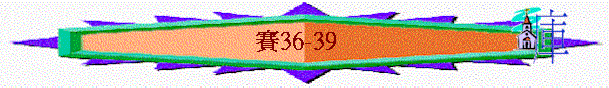

|
在 黑 暗 時 代 中 的 信 息（1-66） |
|||||
|
在變質國度中的斥責 |
在君亡噩訊中的異象 |
在無助孤身中的應許 |
在爭戰世界中的預言 |
在危難困境中的經歷 |
在暗淡前景中的安慰 |
|
1-5 |
6 |
7-12 |
13-35 |
36-39 |
40-66 |
五.在危難困境中的經歷(36-39)
＊時期：希西家王十四年（36:1）
＊背景：亞述大軍正想入侵耶路撒冷
＊特色：
～本段是歷史的敘述，不同之前的宣講、預言。
～主角是希西家；以賽亞揀選了希西家作王十四年發生的三件事情，似乎有特別意思。
～3件事情是希西家本人親身經歷的，特別在經歷中（不單是在理論中）認識他所信的神是怎樣的神。
～特別題到2個邦國，先題亞述，後題巴比倫，似乎寓意亞述的王國漸衰，新一代的邦國巴比倫將興起。
～賽36-39的內容幾乎是與王下18:13-20:19的文字及內容一樣，可能是以賽亞根據當時的歷史記載而加入至以賽亞書，但以賽亞沒有加入王下18:14-16希西家曾向亞述人投降的歷史，另外，以賽亞書加多了賽38:9-20希西家得拯救的詩歌，可能作者要強調在逆境中得拯救及得勝的經歷，所以沒有加入希西家投降的失敗事情
～賽14、33章中也預言亞述被神擊打的事情，而在36-37中我們看到預言終應驗了！
1.在環境挑戰中經歷神的拯救(36-39)
A.敵人的挑戰
a.現實的危機
「希西家王十四年，亞述王西拿基立上來攻擊猶大的一切堅固城，將城攻取。」36:1
～在亞述的文獻中，猶大有46個堅固城，但亞述王西拿基立也將這些城攻取了，在現實裡，猶大看到亞述敵人步步進逼的危險
b.心理的威嚇
～亞述王派拉伯沙基(非人的名，是亞述王的官銜)攻打耶路撒冷，他在上池的水溝旁上用言語威嚇選民而目的是令選民懼怕及投降
(1)質疑對方的倚靠
「亞述王從拉吉差遣拉伯沙基率領大軍往耶路撒冷，到希西家王那裡去。他就站在上池的水溝旁，在漂布地的大路上。於是希勒家的兒子家宰以利亞敬，並書記舍伯那和亞薩的兒子史官約亞，出來見拉伯沙基。拉伯沙基對他們說：「你們去告訴希西家說，亞述大王如此說：『你所倚靠的有什麼可仗賴的呢？你說，有打仗的計謀和能力，我看不過是虛話。你到底倚靠誰才背叛我呢？看哪，你所倚靠的埃及是那壓傷的葦杖，人若靠這杖，就必刺透他的手。埃及王法老向一切倚靠他的人也是這樣。」36:2-6
～拉伯沙基質疑選民所倚靠的埃及是否有能力與亞述爭戰
(2)否定對方的信仰
「你若對我說：我們倚靠耶和華我們的神。希西家豈不是將神的邱壇和祭壇廢去，且對猶大和耶路撒冷的人說：你們當在這壇前敬拜嗎？」36:7
～敵人指出他們曾倚靠神，曾在宗教上有改革，廢棄邱壇，但現在又如何？仍是要敗給亞述！
(3)抬舉自己的實力
「現在你把當頭給我主亞述王，我給你二千匹馬，看你這一面騎馬的人夠不夠。若不然，怎能打敗我主臣僕中最小的軍長呢？你竟倚靠埃及的戰車馬兵嗎？」36:8-9
(4)扭曲真神的旨意
「現在我上來攻擊毀滅這地，豈沒有耶和華的意思嗎？耶和華吩咐我說，你上去攻擊毀滅這地吧！』」」36:10
～神的旨意是要用亞述管教選民，但不是要毁滅那地！
(5)擴散影響的範圍
「以利亞敬、舍伯那、約亞對拉伯沙基說：「求你用亞蘭言語和僕人說話，因為我們懂得；不要用猶大言語和我們說話，達到城上百姓的耳中。」拉伯沙基說：「我主差遣我來，豈是單對你和你的主說這些話嗎？不也是對這些坐在城上、要與你們一同吃自己糞喝自己尿的人說嗎？」」36:11-12
(6)離間內部的權威
「於是，拉伯沙基站著，用猶大言語大聲喊著說：「你們當聽亞述大王的話。王如此說：『你們不要被希西家欺哄了，因他不能拯救你們。」36:13-14
(7)誘導選民的立場
「不要聽希西家的話，因亞述王如此說：你們要與我和好。出來投降我，各人就可以吃自己葡萄樹和無花果樹的果子，喝自己井裡的水。等我來領你們到一個地方，與你們本地一樣，就是有五穀和新酒之地，有糧食和葡萄園之地。」36:16-17
(8)別國敗亡的事實
「哈馬和亞珥拔的神在那裡呢？西法瓦音的神在那裡呢？他們曾救撒瑪利亞脫離我的手嗎？這些國的神有誰曾救自己的國脫離我的手呢？難道耶和華能救耶路撒冷脫離我的手嗎？』」」36:19-20
～哈馬、亞珥城是大馬色(亞蘭)以北的城邦，主前732年，亞蘭亡於亞述，西法瓦音是哈馬與大馬色之間的一個城
～此處表明亞蘭敗於亞述，他們也不能幫到北國
(9)持續不斷的攪擾
「拉伯沙基回去，正遇見亞述王攻打立拿；原來他早聽見亞述王拔營離開拉吉。亞述王聽見人論古實王特哈加說：「他出來要與你爭戰。」亞述王一聽見，就打發使者去見希西家，吩咐他們說：「你們對猶大王希西家如此說：『不要聽你所倚靠的神欺哄你說：耶路撒冷必不交在亞述王的手中。你總聽說亞述諸王向列國所行的乃是盡行滅絕，難道你還能得救嗎？我列祖所毀滅的，就是歌散、哈蘭、利色，和屬提拉撒的伊甸人；這些國的神何曾拯救這些國呢？」37:8-12
～亞述王風聞古實王特哈加要與他爭戰，所以先發制人，逼南國投降，免猶大與埃及聯盟
～37:12題及的城巿屬米所波大米地
B.選民的回應
a.靜默
「百姓靜默不言，並不回答一句，因為王曾吩咐說：「不要回答他。」」36:21
b.哀痛
「當下希勒家的兒子家宰以利亞敬和書記舍伯那，並亞薩的兒子史官約亞，都撕裂衣服，來到希西家那裡，將拉伯沙基的話告訴了他。」36:22
「希西家王聽見就撕裂衣服，披上麻布，進了耶和華的殿，」37:1
～撒裂衣服是哀痛的表現
c.求救
「使家宰以利亞敬和書記舍伯那，並祭司中的長老，都披上麻布，去見亞摩斯的兒子先知以賽亞，對他說：「希西家如此說：『今日是急難、責罰、凌辱的日子，就如婦人將要生產嬰孩，卻沒有力量生產。或者耶和華你的神聽見拉伯沙基的話，就是他主人亞述王打發他來辱罵永生神的話；耶和華你的神聽見這話就發斥責。故此，求你為餘剩的民揚聲禱告。』」」37:2-4
～希西家請求以賽亞幫助，尋求神的拯救
d.祈禱
「希西家從使者手裡接過書信來，看完了，就上耶和華的殿，將書信在耶和華面前展開。希西家向耶和華禱告說：「坐在二基路伯上萬軍之耶和華以色列的神啊，你惟有你是天下萬國的神，你曾創造天地。耶和華啊，求你側耳而聽；耶和華啊，求你睜眼而看，要聽西拿基立的一切話，他是打發使者來辱罵永生神的。」37:14-17
「耶和華我們的神啊，現在求你救我們脫離亞述王的手，使天下萬國都知道惟有你是耶和華。」」37:20
C.真神的拯救
a.拯救的承諾
「以賽亞對他們說：「要這樣對你們的主人說，耶和華如此說：『你聽見亞述王的僕人褻瀆我的話，不要懼怕。我必驚動（原文作使靈進入）他的心；他要聽見風聲就歸回本地，我必使他在那裡倒在刀下。』」」37:6-7
b.拯救的原因
(1)因君王的祈禱
「亞摩斯的兒子以賽亞就打發人去見希西家，說：「耶和華以色列的神如此說，你既然求我攻擊亞述王西拿基立，」37:21
(2)因真神的公義
「你坐下，你出去，你進來，你向我發烈怒，我都知道。因你向我發烈怒，又因你狂傲的話達到我耳中，我就要用鉤子鉤上你的鼻子，把嚼環放在你口裡，使你從原路轉回去。」37:28-29
(3)因神自己原故
「因我為自己的緣故，又為我僕人大衛的緣故，必保護拯救這城。」」37:35
(4)因大衛的原故
c.應許的確實
「以色列人哪，我賜你們一個證據：你們今年要吃自生的，明年也要吃自長的，至於後年，你們要耕種收割，栽植葡萄園，吃其中的果子。猶大家所逃脫餘剩的，仍要往下扎根，向上結果。必有餘剩的民從耶路撒冷而出；必有逃脫的人從錫安山而來。萬軍之耶和華的熱心必成就這事。「所以耶和華論亞述王如此說：他必不得來到這城，也不在這裡射箭，不得拿盾牌到城前，也不築壘攻城。」37:30-33
d.拯救的行動
「耶和華的使者出去，在亞述營中殺了十八萬五千人。清早有人起來一看，都是死屍了。亞述王西拿基立就拔營回去，住在尼尼微。一日在他的神尼斯洛廟裡叩拜，他兒子亞得米勒和沙利色用刀殺了他，就逃到亞拉臘地。他兒子以撒哈頓接續他作王。」37:36-38
～「耶和華的使者」指一位，神派一位使者，就殺了亞述十八萬五千人
～亞述王真是沒有進過城，沒有射過一箭，就拔營回去
2.在肉身難處中經歷神的垂顧(38)
～此段應是西拿基立攻打耶路撒冷之前
A.肉身的疾病
「那時希西家病得要死，亞摩斯的兒子先知以賽亞去見他，對他說：「耶和華如此說：你當留遺命與你的家，因為你必死不能活了。」」38:1
～希西家患重病時，應是39歲
B.君王的祈求
「希西家就轉臉朝牆，禱告耶和華說：」38:2
C.真神的垂顧
a.神聽見
「耶和華的話臨到以賽亞說：「你去告訴希西家說，耶和華你祖大衛的神如此說：我聽見了你的禱告，看見了你的眼淚。我必加增你十五年的壽數；」38:4-5
b.神看見
c.神應許
(1)增壽數
「你去告訴希西家說，耶和華你祖大衛的神如此說：我聽見了你的禱告，看見了你的眼淚。我必加增你十五年的壽數；」38:5
(2)得拯救
「並且我要救你和這城脫離亞述王的手，也要保護這城。」38:6
d.神印證
「「我耶和華必成就我所說的。我先給你一個兆頭，就是叫亞哈斯的日晷，向前進的日影往後退十度。」於是，前進的日影果然在日晷上往後退了十度。」38:7-8
～神用日影往後退十度，來表明祂會醫治希西家
D.君王的詩歌
「猶大王希西家患病已經痊愈，就作詩說：」38:9
a.病患的感觸
「我說：正在我中年（或作：晌午）之日必進入陰間的門；我餘剩的年歲不得享受。我說：我必不得見耶和華，就是在活人之地不見耶和華；我與世上的居民不再見面。」38:10-11
「我可說什麼呢？他應許我的，也給我成就了。我因心裡的苦楚，在一生的年日必悄悄而行。」38:15
b.祈求的認定
「主啊，人得存活乃在乎此。我靈存活也全在此。所以求你使我痊愈，仍然存活。」38:16
c.得救的稱頌
「原來，陰間不能稱謝你，死亡不能頌揚你；下坑的人不能盼望你的誠實。只有活人，活人必稱謝你，像我今日稱謝你一樣。為父的，必使兒女知道你的誠實。耶和華肯救我，所以，我們要一生一世在耶和華殿中用絲弦的樂器唱我的詩歌。」38:18-20
E.得癒的補充
「以賽亞說：「當取一塊無花果餅來，貼在瘡上，王必痊愈。」希西家問說：「我能上耶和華的殿，有什麼兆頭呢？」」38:21-22
～此段是補充了希西家得醫治的方法與過程
3.在生命倒退下經歷神的管教(39)
A.人的倒退
「那時，巴比倫王巴拉但的兒子米羅達巴拉但聽見希西家病而痊愈，就送書信和禮物給他。希西家喜歡見使者，就把自己寶庫的金子、銀子、香料、貴重的膏油，和他武庫的一切軍器，並所有的財寶都給他們看；他家中和全國之內，希西家沒有一樣不給他們看的。」39:1-2
「希西家卻沒有照他所蒙的恩報答耶和華；因他心裡驕傲，所以忿怒要臨到他和猶大並耶路撒冷。但希西家和耶路撒冷的居民覺得心裡驕傲，就一同自卑，以致耶和華的忿怒在希西家的日子沒有臨到他們。」代下32:25-26
～希西家得神醫治及國家得神拯救後，卻在生命中出現倒退的事情，當時巴比倫王的兒子差使者來到他面前，他將家中和全國的軍倉給使者看
～但他錯在那裡，代下32:25-26解釋了他的軟弱
a.心高氣傲
～得拯救後卻在人面前顯自己的榮耀，心高氣傲，展示自己的實力，沒歸榮耀給神
b.忘記神恩
～使者來到他面前，他似乎沒有在使者面前感謝神的拯救，在顯露自己的實力中，忘記了賜他豐富的神，也沒有作一些事情報答神的恩
c.忘神忠告
～在以賽亞書一早已預言有遠方的人會攻擊猶大，但似乎希西家沒有放在心，竟犯了軍事大忌，將軍庫展示給將來的敵人
～而代下更表明此倒退不單是希西家的，也是眾百姓的，百姓當時也是驕傲起來的
B.神的管教
「日子必到，凡你家裡所有的，並你列祖積蓄到如今的，都要被擄到巴比倫去，不留下一樣；這是耶和華說的。並且從你本身所生的眾子，其中必有被擄去、在巴比倫王宮裡當太監的。」」39:6-7
C.人的轉機
「希西家對以賽亞說：「你所說耶和華的話甚好，因為在我的年日中必有太平和穩固的景況。」」39:8
～若根據代下32:26，他們應自卑起來，所以神的忿怒臨到希西家在世日子，因此希西家感受到神聽他們自卑的祈禱，減輕對他們的管教，所以他說甚好